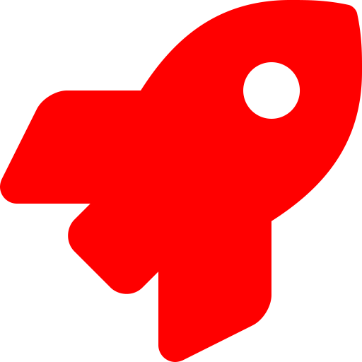

The icons package for R makes adding web icons to reports, presentations and apps easy. It integrates many popular icon libraries from around the web with a simple interface that works with any rmarkdown output format. If a particular icon library is not explicitly supported by this package, you can still use it by creating a custom icon set from a folder of SVG files. Icons provide flexible means of digital expression, allowing expressions and functionality beyond what is possible with emoji.
The icons package currently provides helpful tools for downloading and using icons from these libraries:
- Font Awesome (Pro icons can be used using custom icon sets)
- Ionicons
- Academicons
- Simple Icons
- Google’s Material Design
- Octicons
- Feather Icons
Installation
The development version can be installed from GitHub using:
# install.packages("remotes")
remotes::install_github("mitchelloharawild/icons")Once you’ve installed the package you’ll also need to download some icons! Supported icon libraries (listed above) can be downloaded using the download_*() functions. For example, to download the Font Awesome icons you would use download_fontawesome().
Usage
library(icons)
#> ── Installed icons ─────────────────────────────────────────────── icon 0.2.0 ──
#> ✓ ionicons 5.2.3 ✓ feather_icons v4.28.0
#> ✓ academicons 1.9.1 ✓ octicons 11.2.0
#> ✓ simple_icons 4.4.0 ✓ fontawesome 5.15.2
#> ✓ google_material 4.0.0Icons can be inserted inline using inline code `r icons::fontawesome("rocket", style = "solid")`  or
or `r icons::fontawesome$solid$rocket` .
Icons can also be inserted using usual R chunks.
```{r icon-chunk}
fontawesome("rocket", style = "solid") # equivalent to icons::fontawesome$solid$rocket
```If the icon name contains non-syntactic name characters like a - or +, you will need to quote the name with backticks, single or double quotes:
fontawesome$brands$`r-project` # or 'r-project' or "r-project"The appearance of an icon can be customised using the icon_style() function.

Custom icon sets can be created using the icon_set() function, which accepts a directory of SVG files and allows them to be used as icons.
You can also search for icons using the icon_find() function.
icon_find("rocket")
#> $`ionicons$rocket`
#> <svg viewBox="0 0 512 512" style="height:1em;position:relative;display:inline-block;top:.1em;" xmlns="http://www.w3.org/2000/svg">
#> <title></title>
#> <path d="M328.85,156.79a26.69,26.69,0,1,0,18.88,7.81A26.6,26.6,0,0,0,328.85,156.79Z"></path>
#> <path d="M477.44,50.06a.29.29,0,0,1,0-.09,20.4,20.4,0,0,0-15.13-15.3c-29.8-7.27-76.68.48-128.63,21.28-52.36,21-101.42,52-134.58,85.22A320.7,320.7,0,0,0,169.55,175c-22.33-1-42,2.18-58.57,9.41-57.74,25.41-74.23,90.44-78.62,117.14a25,25,0,0,0,27.19,29h.13L124,323.53c.08.82.17,1.57.24,2.26a34.36,34.36,0,0,0,9.9,20.72l31.39,31.41a34.27,34.27,0,0,0,20.71,9.91l2.15.23-7,64.24s0,.08,0,.13A25,25,0,0,0,206,480a25.25,25.25,0,0,0,4.15-.34C237,475.34,302,459.05,327.34,401c7.17-16.46,10.34-36.05,9.45-58.34a314.78,314.78,0,0,0,33.95-29.55c33.43-33.26,64.53-81.92,85.31-133.52C476.74,128.23,484.53,81,477.44,50.06ZM370.38,224.94a58.77,58.77,0,1,1,0-83.07A58.3,58.3,0,0,1,370.38,224.94Z"></path>
#> <path d="M161.93,386.44a16,16,0,0,0-11,2.67c-6.39,4.37-12.81,8.69-19.29,12.9-13.11,8.52-28.79-6.44-21-20l12.15-21a16,16,0,0,0-15.16-24.91A61.25,61.25,0,0,0,72,353.56c-3.66,3.67-14.79,14.81-20.78,57.26A357.94,357.94,0,0,0,48,447.59,16,16,0,0,0,64,464h.4a359.87,359.87,0,0,0,36.8-3.2c42.47-6,53.61-17.14,57.27-20.8a60.49,60.49,0,0,0,17.39-35.74A16,16,0,0,0,161.93,386.44Z"></path>
#> </svg>
#>
#> $`octicons$rocket`
#> <svg viewBox="0 0 16 16" style="height:1em;position:relative;display:inline-block;top:.1em;" xmlns="http://www.w3.org/2000/svg">
#> <path fill-rule="evenodd" d="M14.064 0a8.75 8.75 0 00-6.187 2.563l-.459.458c-.314.314-.616.641-.904.979H3.31a1.75 1.75 0 00-1.49.833L.11 7.607a.75.75 0 00.418 1.11l3.102.954c.037.051.079.1.124.145l2.429 2.428c.046.046.094.088.145.125l.954 3.102a.75.75 0 001.11.418l2.774-1.707a1.75 1.75 0 00.833-1.49V9.485c.338-.288.665-.59.979-.904l.458-.459A8.75 8.75 0 0016 1.936V1.75A1.75 1.75 0 0014.25 0h-.186zM10.5 10.625c-.088.06-.177.118-.266.175l-2.35 1.521.548 1.783 1.949-1.2a.25.25 0 00.119-.213v-2.066zM3.678 8.116L5.2 5.766c.058-.09.117-.178.176-.266H3.309a.25.25 0 00-.213.119l-1.2 1.95 1.782.547zm5.26-4.493A7.25 7.25 0 0114.063 1.5h.186a.25.25 0 01.25.25v.186a7.25 7.25 0 01-2.123 5.127l-.459.458a15.21 15.21 0 01-2.499 2.02l-2.317 1.5-2.143-2.143 1.5-2.317a15.25 15.25 0 012.02-2.5l.458-.458h.002zM12 5a1 1 0 11-2 0 1 1 0 012 0zm-8.44 9.56a1.5 1.5 0 10-2.12-2.12c-.734.73-1.047 2.332-1.15 3.003a.23.23 0 00.265.265c.671-.103 2.273-.416 3.005-1.148z"></path>
#> </svg>
#>
#> $`fontawesome$solid$rocket`
#> <svg viewBox="0 0 512 512" style="height:1em;position:relative;display:inline-block;top:.1em;" xmlns="http://www.w3.org/2000/svg">
#> <path d="M505.12019,19.09375c-1.18945-5.53125-6.65819-11-12.207-12.1875C460.716,0,435.507,0,410.40747,0,307.17523,0,245.26909,55.20312,199.05238,128H94.83772c-16.34763.01562-35.55658,11.875-42.88664,26.48438L2.51562,253.29688A28.4,28.4,0,0,0,0,264a24.00867,24.00867,0,0,0,24.00582,24H127.81618l-22.47457,22.46875c-11.36521,11.36133-12.99607,32.25781,0,45.25L156.24582,406.625c11.15623,11.1875,32.15619,13.15625,45.27726,0l22.47457-22.46875V488a24.00867,24.00867,0,0,0,24.00581,24,28.55934,28.55934,0,0,0,10.707-2.51562l98.72834-49.39063c14.62888-7.29687,26.50776-26.5,26.50776-42.85937V312.79688c72.59753-46.3125,128.03493-108.40626,128.03493-211.09376C512.07526,76.5,512.07526,51.29688,505.12019,19.09375ZM384.04033,168A40,40,0,1,1,424.05,128,40.02322,40.02322,0,0,1,384.04033,168Z"></path>
#> </svg>A Note on the old API
This is the second iteration of the icon package, the first icon package has been successful, but lacked a few features such as SVG icons, user defined libraries, and extensibility support. You can read the notes on the new API here. It turns out that it was easier to build the new and improved icon from scratch, which is what this repository is. In the future this version of icon might just be merged into rOpenScilabs/icon, but for the mean time it will be developed here. We anticipate that there will only be any minor changes to the existing API, so hopefully this will be a seamless transition for users! Notably, the icon_name functions have been removed in favour of icon$name, and the interface for styling and animating has been removed/changed.